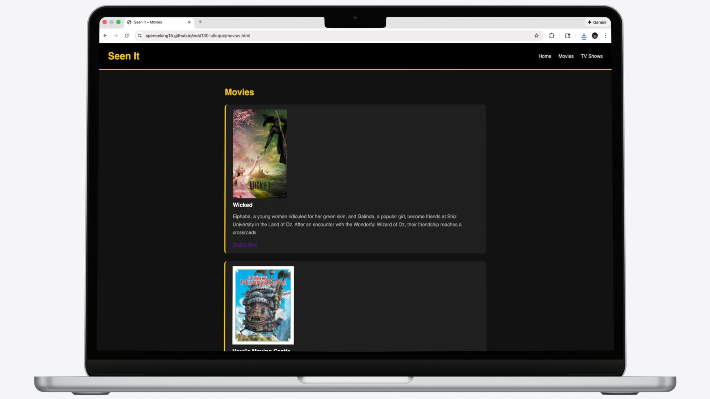

Lead Developer Report
As the lead developer, I communicated with my team through email and also spoke with them in person during class. This helped ensure tasks were clear and that everyone stayed on track throughout the project. I also communicated with my client through email, and there were no issues. I was able to receive a site plan from him and work with my team to build the website according to his requirements. I showed my client the website in person during one of our classes and also sent him the live link through email. Managing the site with GitHub was a good experience and made teamwork easier and more effective.
Visit website
Junior Developer Report
I worked as a junior developer for Jarom, and the experience was good. I was assigned to work on the enemy subpage for a site for Purser, and we communicated through Canvas. There were no issues with communication. I knew what was expected of me for my part of the website and was given a wireframe to follow. I was able to contribute successfully to the site and finish the assigned subpage. I did not have any problems using GitHub during this part of the project.
Visit website

Client Report
I decided on the images and content for my site based on the purpose of the website, which was to display movie and TV show recommendations. I chose movie and TV show posters to visually represent each recommendation, and I used plot summaries from IMDb for the text content. I communicated with my lead developer through email, and there were no issues. My developer mostly met my expectations, and since I ended up being a junior developer for a website I originally designed, I was able to polish the CSS and adjust the design to better match my original vision. If I were to hire a team again, I would first look at the type of work they have done before and choose someone whose design style matches what I want.
Visit website